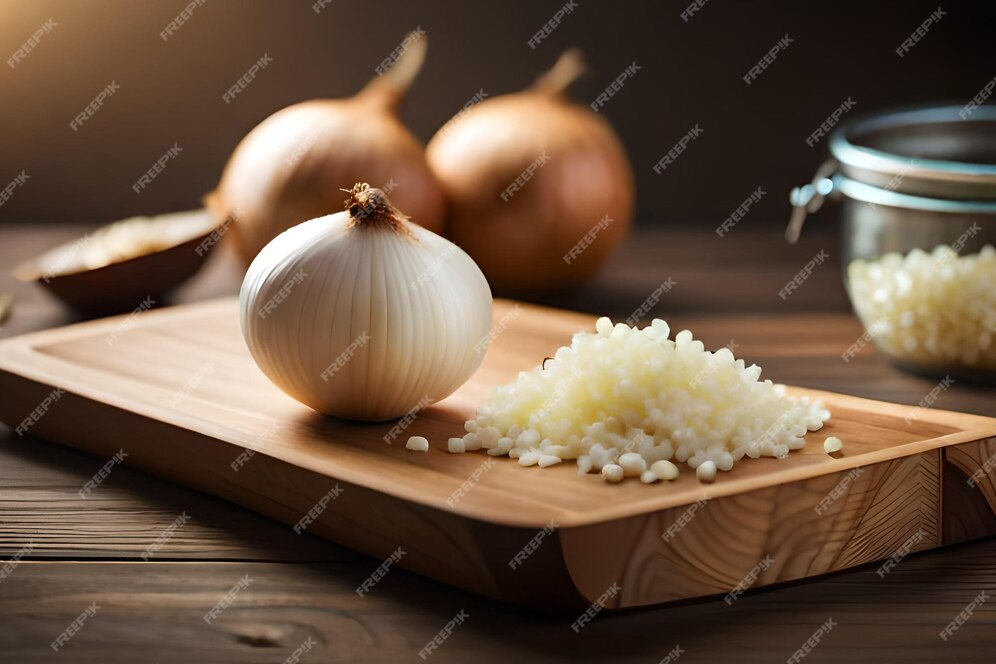
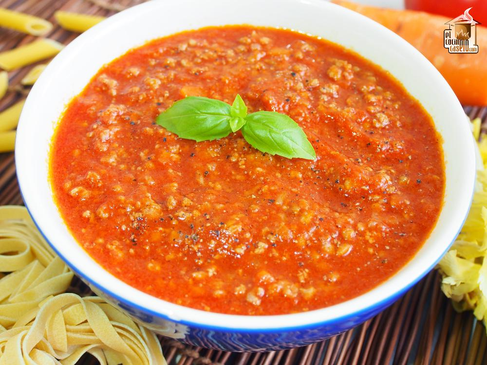
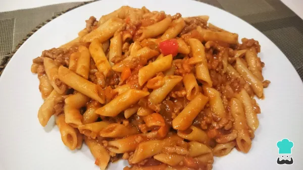

Receta macarrones con tomatico
Ingredientes:
- 1kg de macarrones
- Cebolla
- Dos dientes de ajo
- 500gr de carne picada
- 500ml de tomate frito
- Sal, pimienta, orégano
- Poner a hervir los macarrones según las instrucciones del fabricante

- Cortar la cebolla, el ajo y preparar la carne picada

- Sofreir los ingredientes anteriores en una sartén grande hasta que la
cebolla coja color y la carne quede dorada (que no se queme el ajo)
- Salpimentar y añadir el oregano
- Añadir el tomate frito a la sartén y bajar el fuego al mínimo. Dejar
cocinar durante al menos 10 min

- Escurrir los macarrones una vez cocidos
- Mezclarlos con la salsa y servir

Que aproveche!